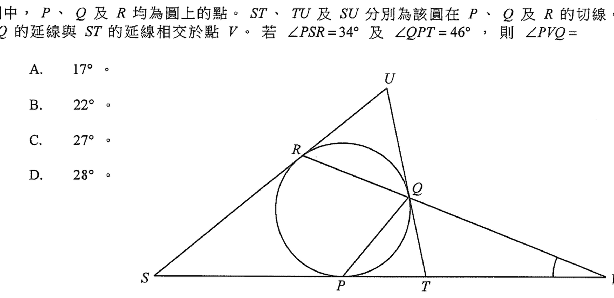
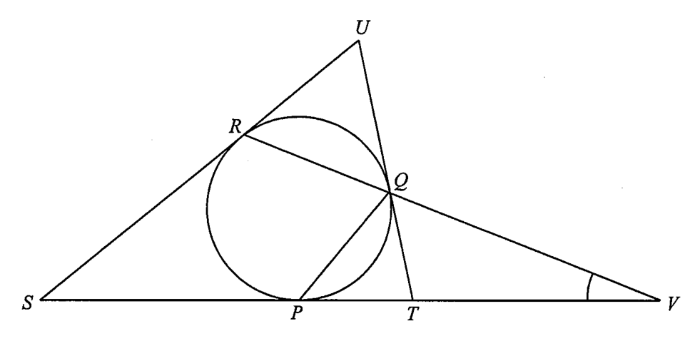

2023 DSE 數學 P2 Q38 答案＋詳解｜答對率 50%
官方答案
C
歷年考生答對率 50%（官方統計）
題目（中文卷）
圖中，$P$、$Q$ 及 $R$ 均為圓上的點。$ST$、$TU$ 及 $SU$ 分別為該圓在 $P$、$Q$ 及 $R$ 的切線。$RQ$ 的延線與 $ST$ 的延線相交於點 $V$。若 $\angle PSR = 34^\circ$ 及 $\angle QPT = 46^\circ$，則 $\angle PVQ =$

- A. $17^\circ$
- B. $22^\circ$
- C. $27^\circ$
- D. $28^\circ$
English version（英文卷題目）
In the figure, $P$, $Q$ and $R$ are points lying on a circle. $ST$, $TU$ and $SU$ are the tangents to the circle at $P$, $Q$ and $R$ respectively. $RQ$ produced and $ST$ produced meet at the point $V$. If $\angle PSR = 34^\circ$ and $\angle QPT = 46^\circ$, then $\angle PVQ =$

[FIGURE Q38: Circle with center O, points S, P, T, V on circumference and on horizontal line. Points U, R, V on curved lines. No angles, no dashed lines, no right-angle marks, no shading. All labels are capital letters.]- A. $17^\circ$
- B. $22^\circ$
- C. $27^\circ$
- D. $28^\circ$
相關課題
技能分析（呢題考咩、陷阱喺邊）
- 主課題
- 圓形幾何
- 全港答對率
- 50%
- 官方答案
- C